Data Collection
Data was gathered from the following sources:
- API Source: WAQI API (World Air Quality Index)
- Static Dataset: City Day CSV (Kaggle)
1. API Data Gathering Code
The following Python code was used to fetch the live data:
import requests
import pandas as pd
import time
# API Token hidden for security
TOKEN = "****"
cities = ["london", "new-york", "los-angeles", "paris", "beijing",
"delhi", "tokyo", "seoul", "shanghai", "berlin"]
data_list = []
print("Starting Data Collection from WAQI API...")
for city in cities:
url = f"https://api.waqi.info/feed/{city}/?token={TOKEN}"
try:
response = requests.get(url)
data = response.json()
if data['status'] == 'ok':
result = data['data']
iaqi = result.get('iaqi', {})
row = {
"City": city,
"AQI": result.get('aqi', 'N/A'),
"PM2.5": iaqi.get('pm25', {}).get('v', 'N/A'),
"PM10": iaqi.get('pm10', {}).get('v', 'N/A'),
"NO2": iaqi.get('no2', {}).get('v', 'N/A'),
"SO2": iaqi.get('so2', {}).get('v', 'N/A'),
"O3": iaqi.get('o3', {}).get('v', 'N/A'),
"Lat": result.get('city', {}).get('geo', [None, None])[0],
"Lon": result.get('city', {}).get('geo', [None, None])[1]
}
data_list.append(row)
except Exception as e:
print(f"Connection error for {city}: {e}")
time.sleep(1)
if data_list:
df = pd.DataFrame(data_list)
df.to_csv("waqi_city_data.csv", index=False)
print("SUCCESS! Data saved.")
Exploratory Data Analysis (EDA)
After cleaning the data (filling missing values with the mean and converting dates), the following 15 visualizations were generated to understand the dataset.
1. Correlation Heatmap
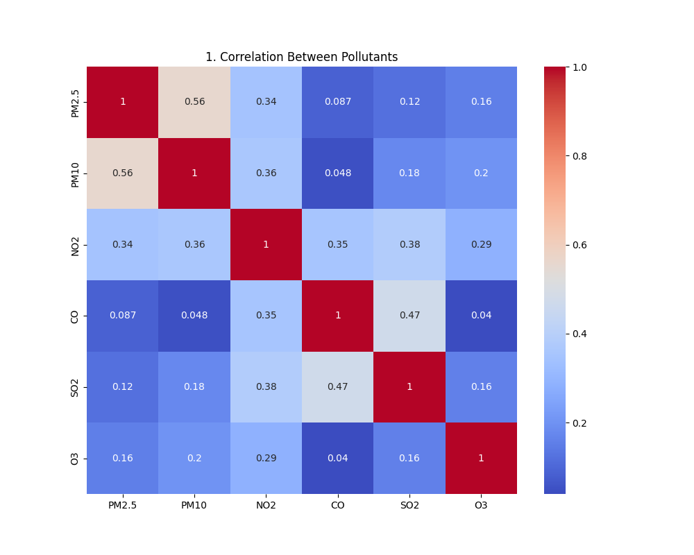The correlation matrix shows a moderate positive correlation (0.56) between PM2.5 and PM10, which is expected as they are related particulate matters. Interestingly, CO and SO2 also show a moderate link (0.47), potentially pointing to shared industrial or combustion sources.
2. PM2.5 Distribution

The histogram shows a highly right-skewed distribution, meaning that while most days have low-to-moderate PM2.5 levels (under 100), there is a long tail of days with dangerous levels. The overlaid curve emphasizes this peak frequency at the lower end and the rapid drop-off as concentration increases.
3. AQI Boxplot
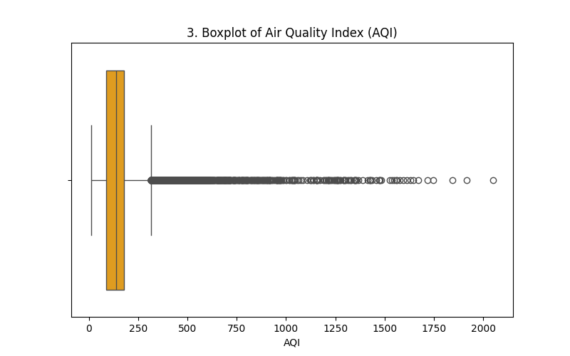The boxplot clearly identifies a massive number of outliers to the right of the upper whisker, confirming that extreme pollution days are common anomalies. The median AQI (the line inside the box) sits below 200, but the outliers extend past 2000, showing the severity of peak pollution events.
4. NO2 vs PM2.5 Scatter
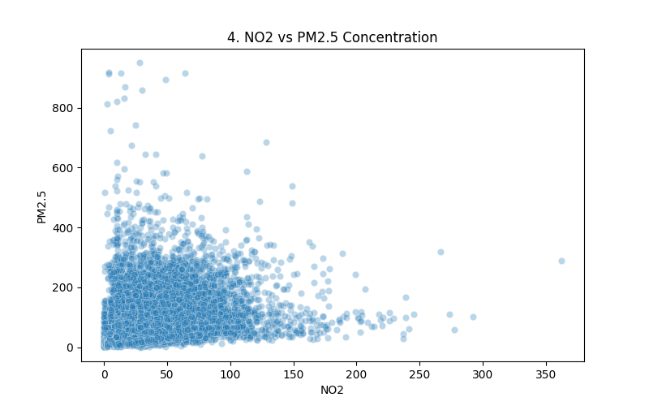The scatter plot displays a dense cluster of data points at lower concentrations for both NO2 and PM2.5, but dispersion increases as values rise. While there is a general positive trend, the wide spread suggests that high NO2 does not always guarantee high PM2.5, implying other contributing factors.
5. Trends Over Time

This time series shows high volatility in PM2.5 levels with massive spikes recurring annually, likely corresponding to the winter season. The data also contains some flat-lining sections (e.g., in 2016-2017) which might indicate missing data or sensor errors rather than actual constant pollution levels.
6. Top 10 Polluted Cities
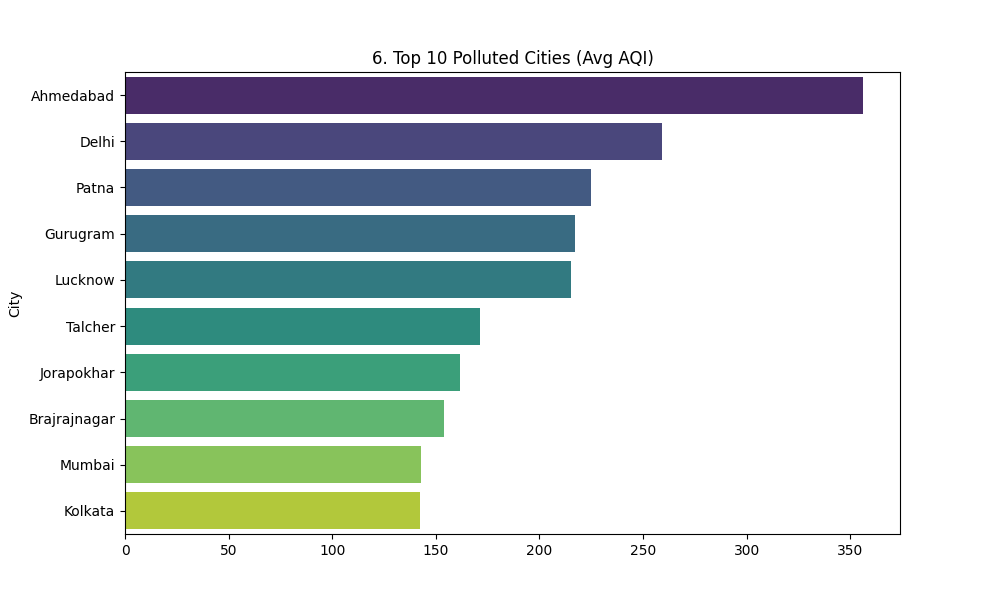Ahmedabad and Delhi stand out as the most polluted cities with significantly higher average AQI compared to others on the list. The difference between the top city (Ahmedabad) and the tenth (Kolkata) is substantial, indicating high regional variability in air quality.
7. Pairplot
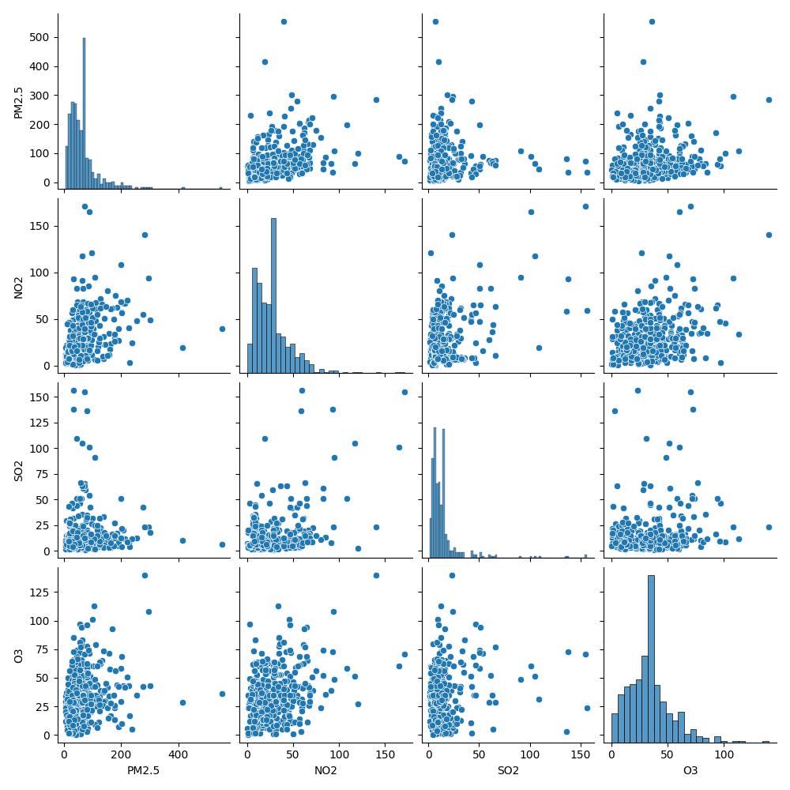This grid shows relationships between multiple pollutants; notably, PM2.5 and NO2 appear to have a positive correlation, suggesting they may originate from similar sources like vehicle emissions. The diagonal histograms also confirm that most pollutants have right-skewed distributions, with lower concentrations being more frequent than high ones.
8. AQI Density (Violin)
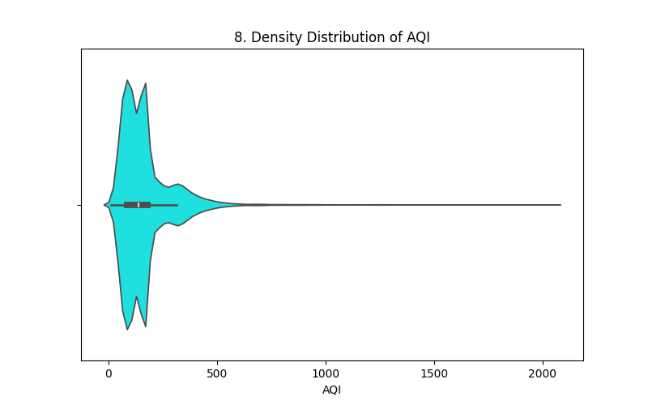The violin plot shows that the majority of AQI readings are concentrated between 50 and 200, indicating moderate pollution is the most common state. However, the long, thin tail extending to the right highlights infrequent but extreme pollution events exceeding 500 or even 1000 AQI.
9. Seasonality (Monthly Avg)

This bar chart reveals a distinct seasonal trend where pollution levels peak in winter months (November, December, January) and dip significantly during the summer months (July, August). This suggests weather patterns likely play a major role in trapping or dispersing pollutants.
10. AQI Categories (Pie Chart)
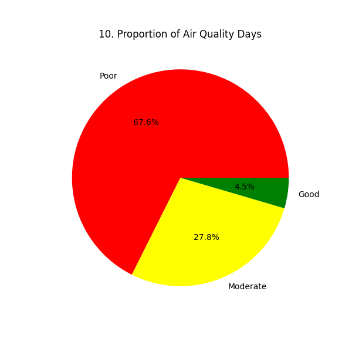11. Weekend vs Weekday
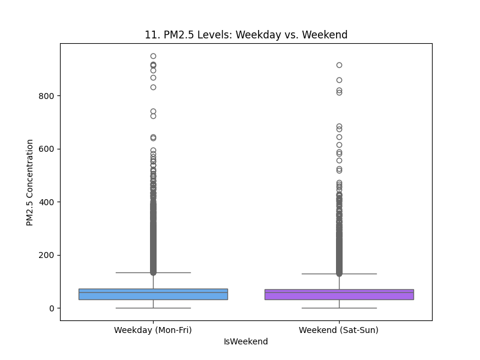Surprisingly, the boxplots show almost identical distributions for weekdays and weekends, suggesting that reduced weekend commuter traffic has little to no impact on overall PM2.5 levels. Both categories share similar medians and extreme outliers, indicating that major pollution sources (like industry or dust) persist regardless of the day of the week.
12. Yearly Trend
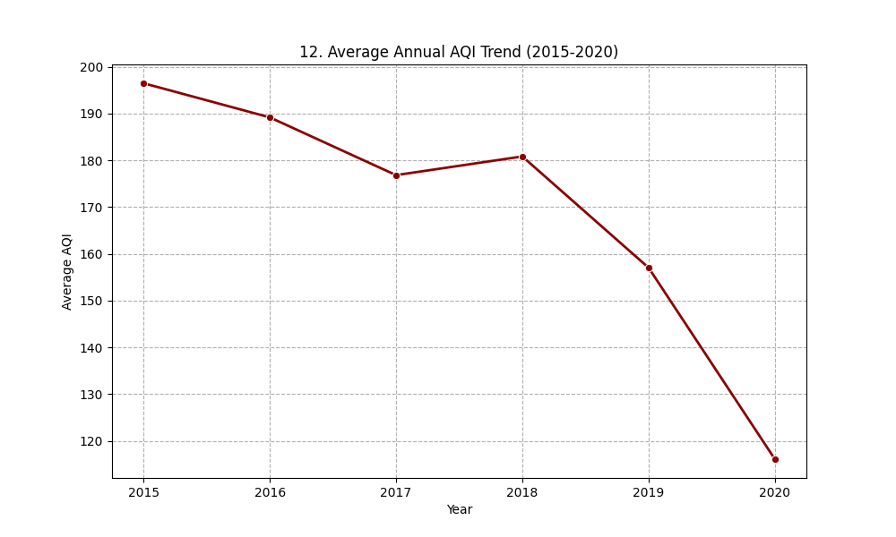This line graph illustrates a promising downward trend in pollution levels, dropping from an average AQI of nearly 200 in 2015 to below 120 in 2020. The sharpest decline occurs between 2019 and 2020, likely reflecting the significant impact of COVID-19 lockdowns on reducing industrial and vehicular emissions.
13. City Comparison
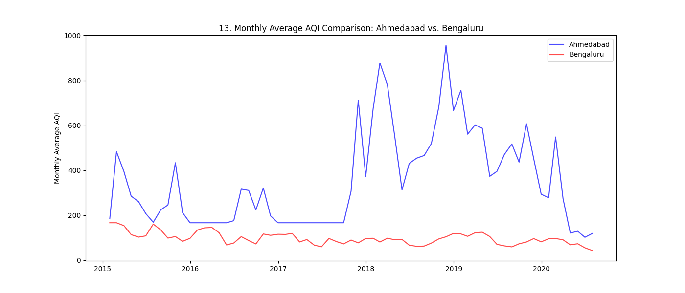This comparison highlights a massive disparity; Ahmedabad (blue) experiences extreme seasonal pollution spikes often exceeding 600 AQI, whereas Bengaluru (red) remains relatively stable and cleaner year-round. The consistent gaps between the lines show that Bengaluru's worst days are often still better than Ahmedabad's average days.
14. NO2 Density
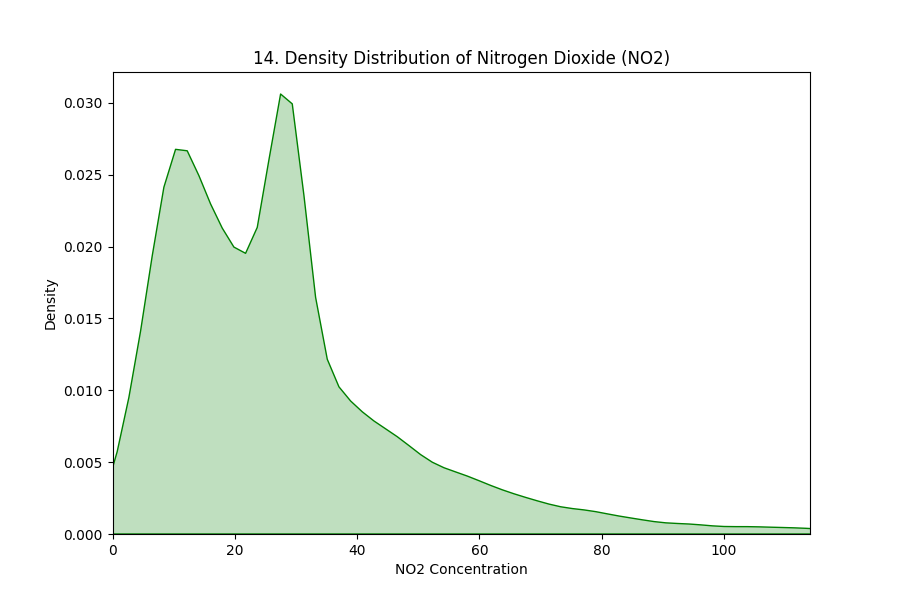This chart presents a stark reality where 67.6% of the recorded days fall into the "Poor" air quality category, indicating a chronic public health issue. Conversely, "Good" air quality is a rarity, occurring on only 4.5% of days, reinforcing the severity of the pollution problem in this dataset.
15. PM2.5 vs PM10 Hexbin
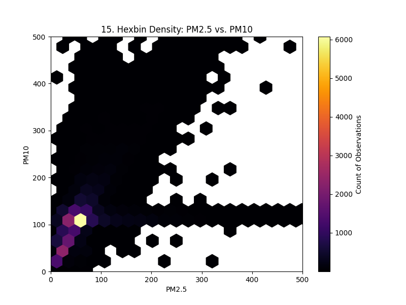This hexbin plot visualizes the density of the relationship between PM2.5 and PM10, with the brightest yellow area indicating that the vast majority of observations occur where both values are low (under 100). The distinct linear trend visible in the dark/black hexes confirms that as PM2.5 increases, PM10 generally increases as well.